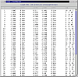

The Text Viewer
Our text viewer is fairly simple: it shows all data about a graph in plain text format. The data is arranged in a way that is similar to the "writegraph" format used by some of our generators.
Each vertex takes up one line in the text viewer. Whithin that line, the
first column shows the vertex number, starting with one. In the next columns
you can find all vertex coordinates. There are 2, 3 or 5 coordinate columns,
depending on whether you have requested 2D or 3D embeddings or both. The
rest of the line shows, under the "adj" heading, the numbers
of all vertices adjacent to the current one (i.e. linked to it by an edge).
As stated before, there are two checkboxes for the text viewer in the output options window, one in the 2D section and one for 3D, but there will be just one text viewer window that will show all coordinates computed for the displayed graph.

| Viewing
results |
||
| TwoView,
the 2D viewer |
||